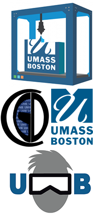

|
Haikun Huang Postdoctoral Research Fellow |
 |
Short Bio |
My research interests include AR/VR/MR, computational design, graphics, HCI, and vision, particularly on the applications of artificial intelligence techniques for creating novel 3D content creation tools and virtual experiences. My research has been published in IEEE VR and ACM CHI; and was recognized with a Best Paper Honorable Mention Award at CHI 2019. I frequently serves as a reviewer for IEEE VR and CHI. I also has years of experience working in the game industry and serving as a columnist for popular game development forums in China such as Manew and Taikr. |
机器学习告诉你 知识贮备很重要
马科夫链告诉你 临时抱佛脚也行
~~~~~~~~~~
(误)
News |
|
|
Honors & Awards |
Services |
|
|
In the Press |
Patents |
| Human Vision-Empowered 3D Scene Analysis Tools Haikun Huang, Lap-Fai Yu US patent application no. 16/598, 718 |
Unity Plugin
I developed a set of toolkits for doing research in Unity, which boots my research progress a lot. It is easy to integrate into any existed projects. Especially in bridging Unity and external programs such as Python, and I/O plain file.
DCXR Kit
You can download it from Github for FREE. Give it a shoot!
DCXR Kit includes 3 tookits: